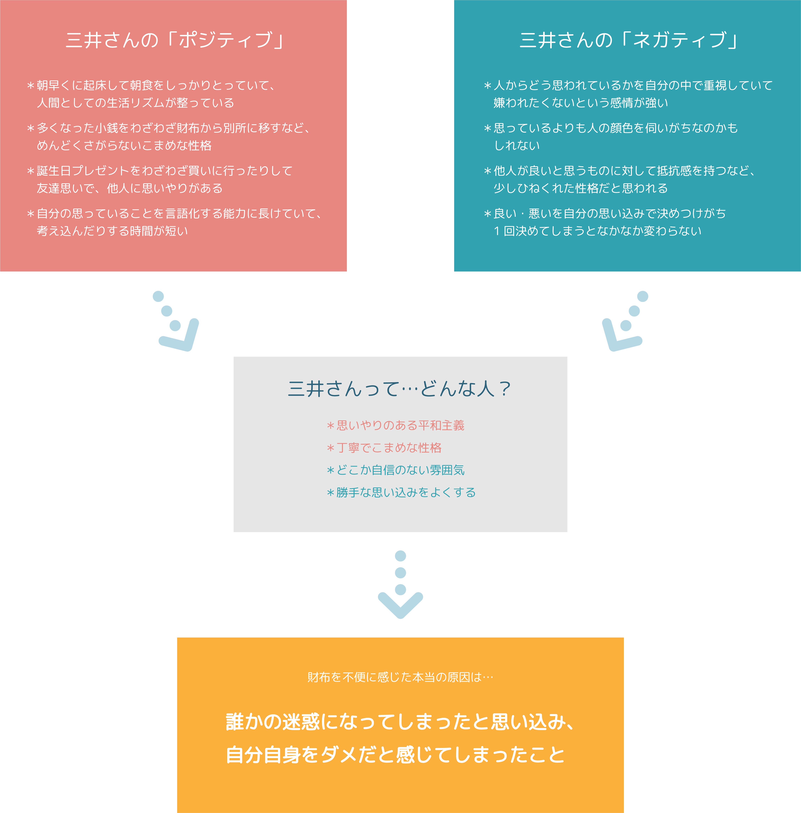

FLAG
2021 アプリケーション企画
-

-
作品紹介
落ち込んだ気持ちを共有するスマホアプリケーション「FLAG」です
デザイン人類学の授業で行った「ヒトありきの捉え方」で、
インタビューイ自身の問題を解決するために必要なことを考えました
「私ってだめだ、」という気持ちを素直に言葉にして共有することで
悩みや不安を1人で抱え込まず、前を向くきっかけを作ります
-
-
インタビューイ
三井りんぜさん 大学生
買い物をしたときに、財布から小銭を出すのに手間取り、もたついてしまった
結果、周りの人に迷惑をかけているかもしれない、と焦ってしまった経験がある
小さな財布を使用しており、そのせいでスムーズな会計ができなかったと考えている

-
-
制作過程
-

-
インタビューイの分析
インタビューイである三井さんの性格から財布を不便に感じた本当の理由を導きます
実際に三井さんが話している様子を映像で見ながら、財布や三井さんについての質問の回答、仕草などから分析を行いました
三井さんの「ポジティブ」と「ネガティブ」な面を見つけ性格を分析し、財布を不便に感じたときの三井さんの心境を詳しく調べます
-

-
インタビューイの分析
インタビューイである三井さんの性格から財布を不便に感じた本当の理由を導きます
実際に三井さんが話している様子を映像で見ながら、財布や三井さんについての質問の回答、仕草などから分析を行いました
三井さんの「ポジティブ」と「ネガティブ」な面を見つけ性格を分析し、財布を不便に感じたときの三井さんの心境を詳しく調べます